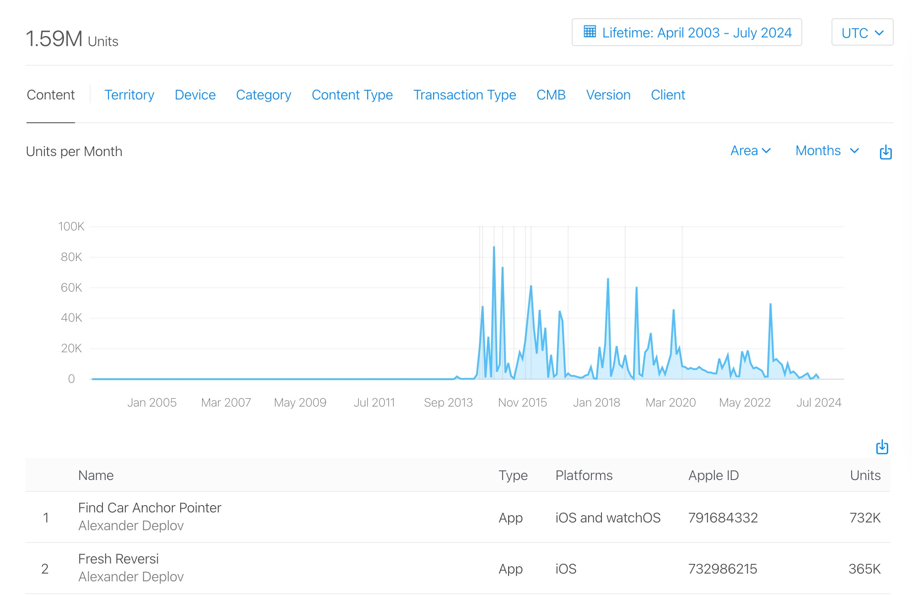
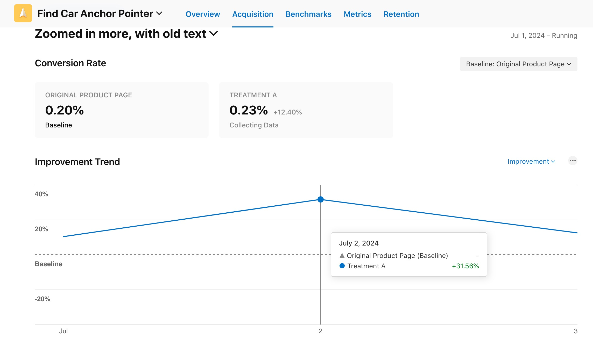
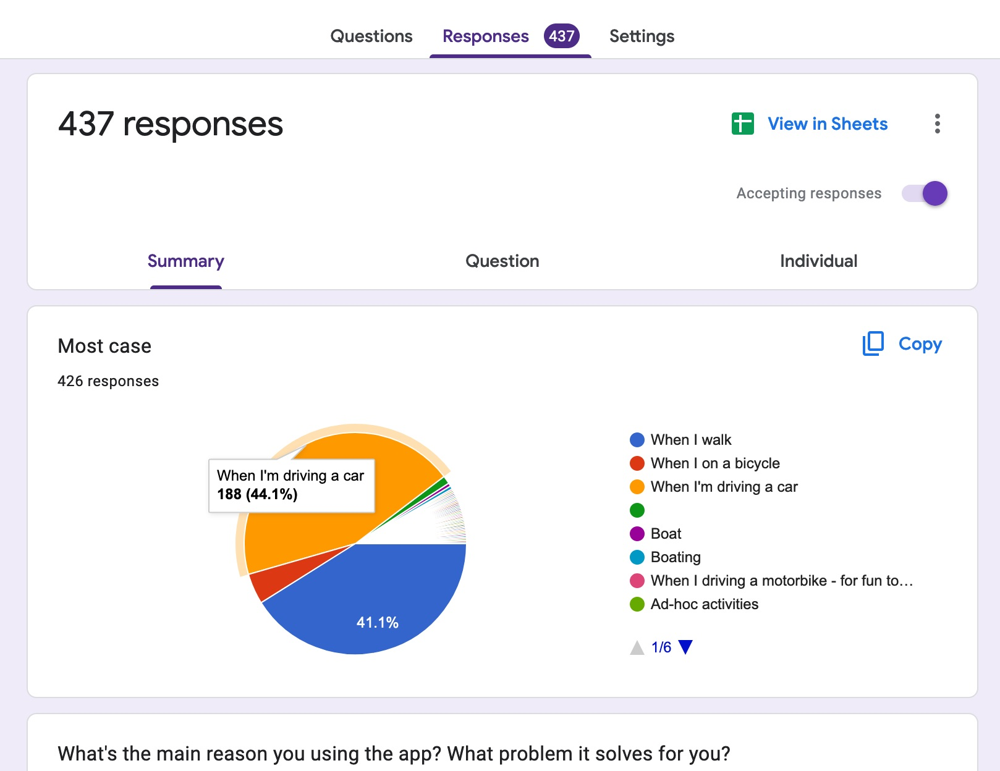
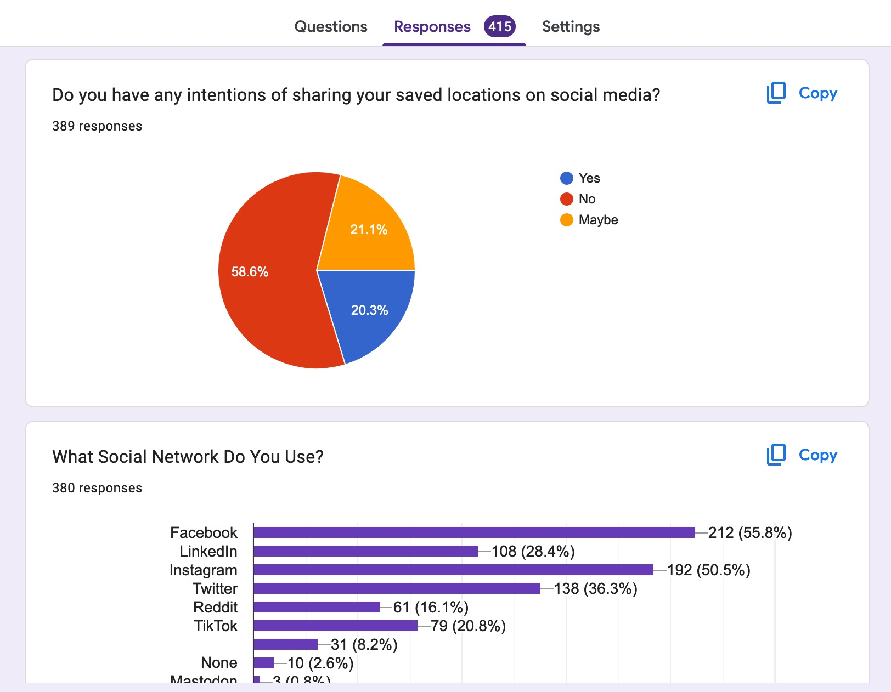
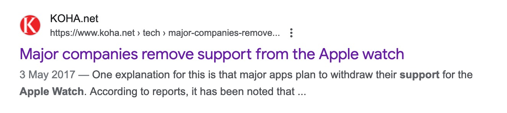
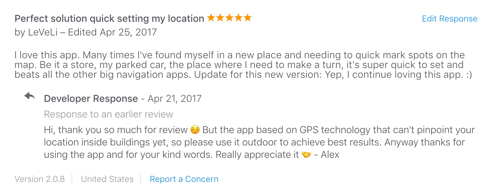
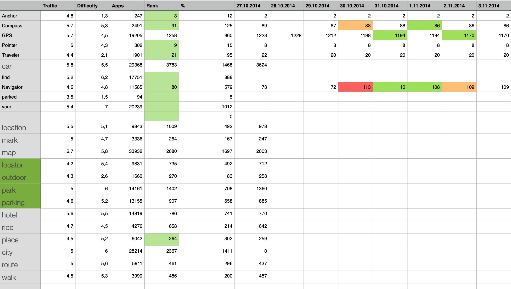

Navigating Success: 11 Years of Innovation with Anchor Pointer GPS Compass
As a product designer with a passion for innovation, I embarked on a journey to create my own product. This led to the birth of the Anchor Pointer GPS Compass, an iOS app designed to provide reliable navigation without an internet connection.
Total downloads 732K, latest 5 years:

Project goal
In 2013 I decided to release my first iOS app. On this way I asked my brother-developer to help me with this project. The goal was to try to create a unique navigation app using GPS as a core technology with one big advantage, it can work without internet connection by reading GPS signal directly from satellites. It could be handy for people who are traveling and not willing to buy another SIM card just to have an internet connection. Or people who use iPhone in a natural area, far away from cell towers.
My role
As co-founder of Pleeq Software, I led the design process from conception to launch, including competitive analysis, user research, and UX/UI design, as well as answering support emails, running A/B tests and online advertising (Apple Search ADS Advanced, and others), setting up app analytics, and more.
Researching target audiences
Since the app was unique in the market, there was no direct access to the target audience, it was unknown. Instead, I assumed that the target audience would be the same as most active iOS users during that period: young, active people in the 25-34 age range.
As it turns out, this assumption was wrong. I’ll explain why in the Mistakes section.
Process
I usually start with a competitive analysis. It’s important to understand what’s happening in the market. In 2013 there wasn’t much. Google Maps was the leader, other apps like TomTom or Waze were built on the map navigation concept and wasn’t direct competitor. Apple released Apple Maps in 2012 and it was also a classic map navigation app.
So instead, I focused on the core use case, which I described as:
A navigation tool that guides you to a specific location by providing both direction and distance. It works much like asking a passerby for directions - they might point in a certain direction and say, “The library is that way, about 500 meters ahead.
From a jobs-to-be-done perspective, the core use cases for this navigation app were defined as
- Finding your way back. Users could mark their starting point (e.g., a parked car, campground, or hotel) and use the app to navigate back to it without relying on an Internet connection or detailed maps.
- Explore unfamiliar areas: Travelers or hikers can set points of interest and navigate between them in areas without cellular coverage or detailed maps.
- Connect with others: Users could share location coordinates and use the app to find each other in crowded or unfamiliar places without having to describe landmarks or rely on cellular data. This task was defined as a separate feature called “Meet Friend”.
- Later, I added “Park Car” because most of our audience, especially from the United States, were car owners. The Park Car feature was also defined as a separate feature so that users could have quick access.
After defining the use cases, I started building the basic screens and defining the navigation architecture. I also decided that the entry point should be simple and as clear as possible. When opening the app, the user should see only a few buttons that can answer a simple question: what do you want to do now? So the main screen was built around these 4 components:
- Save location
- List of locations
- Meet Friend
- Park Car
After a few iterations, I found the perfect balance of easy-to-use navigation and clear structure, each one tested on friends for quick validation. Each saved location can be open in Google or Apple Maps, I decided not to lock user in the app, to give the full freedom.
User reviews
Must have! ★★★★★
I didn’t know I needed this app and now it’s my go to every time I’m in a new place. There is nothing more annoying than trying to mark something in Google maps and the app not working… this app is flawless and work with both Google maps and Apple. I’m traveling to different places all the time where Google doesn’t necessarily have the locations correctly or at all and with this I just mark it, name it and I’m done! Great work!, – Nov 9, 2023, US.
Saves me from myself! ★★★★★
Updated review… still saving me from myself! Been on my home screen for two years +. Never disappoints! 5 stars for giving me one less thing to be worried about. Thank you!, - Aug 30, 2023, US.
OUTSTANDING, REGULARLY UPDATED ★★★★★
This world traveler uses it often. It has never had a glitch. (Retired Delta Air Lines pilot.), – Jan 17, 2024, US.
Great App! ★★★★★
Anchor Pointer is the single ONLY app that has helped me navigate in Italy, Spain, and London. Google Maps and other GPS apps are absolutely useless. One suggestion: I have friends on the android platform that would love to use this app. Any plans? Thanks Alex.Used this wonderful app to make my way through Spain. Worked great.Alex, you asked for suggestions to enhance Anchor Pointer: Perhaps it would be helpful to be able to import addresses from users’ iPhone contact list or from the web. Thanks.An update for Alex:I just returned from Italy on Monday. Again, Anchor Pointer was stellar in the most remote areas, including Venice, which is poorly mapped. Thanks so much for this wonderful app., – Jan 10, 2019, US.
Development
At the same time, I helped my brother to test the prototype to make sure that the technology of GPS triangulation works. He prepared a technical prototype, and we spent hours of walking by testing the concept. Along the way, the Meet Friend feature was tested on a huge field, and later between buildings. During these tests I realized that the idea works, the technical implementation also works well, so we can continue.
It was important to release the app so that we could polish it later by collecting user feedback and analytics.
Results
We released Anchor Pointer in November 2013. Since then it has been downloaded 732K times by people around the globe.
The app was polished with many iterations after the initial release. It received App Store Editors’ Note.
Wherever life takes us, we’ll find our way back with Anchor Pointer. It’s the compass reinvented with walking directions, navigation bookmarks, and an easy parked car locator - all in a friendly design. We save time and stress by sharing our whereabouts with friends and syncing saved locations across devices. For treks through nature or across town, Anchor Pointer fits like a good pair of shoes.
And reviewed by The Next Web (USA), Engadget (USA), Financial Review (Australia) and many others. User reviews are mostly positive. 4.6 out of 5, 2.2K reviews.
Mistakes
App Store Screenshots direction was unknown
Since we were building a multitool in the beginning, it wasn’t clear how to promote it well. What should I show in App Store screenshots? What should I put in the description?
At first I made the mistake of showing almost everything without a clear direction of what the app is about. Later, when I found an answer to what exactly is the target audience and how do they use the app, I changed the screenshots and improved the install rate.
It’s important to note that App Store Optimization allows you to test and improve screenshots. These tests run non-stop, so there is always something to improve.

Not all people can speak English
After running countless amount of screenshots A/B test, I found that in some countries amount of language speaking people is low, not all can read app description or understand App Store screenshots text. Imagine a billboard with all the letters you don’t understand - can it be successful? This is what it looks like for people who can’t read English. So after this discovery I used analytics to find the most popular countries and created localized version of screenshots and description. For the top 10 we also did app localization.
Target audience is different from what I originally thought
To find the target audience, I set up a Google Form with questions about age, gender, location and others to learn more about our users. In terms of implementation, it was super easy - standard iOS notification was shown to everyone who opened the app on the 2nd day of usage with a question to participate in the research. In a short period of time, I collected 437 responses, which was enough to define a user profile.

It turns out that the majority of our users are not young people at all. It’s 50 - 69+.
44% of our users use it for parking and finding a car.
After that, I improved the app’s font size and contrast to improve the experience for older people. We also added support for Dynamic Type.
Before I add new feature I run research again to gather answers, and align it with data from analytics.

Apple Watch support was a mistake
When Apple released the first Apple Watch, it was clearly a new market that we could rely on because people were buying such a new, beautiful device, but the number of apps was limited. So we decided to make an Apple Watch app. It turned out to be a big mistake because at that time the Apple Watch didn’t have a digital compass, so I decided to make a simplified version of the app that would allow you to see saved locations on the map and save the current location as a shortcut. But people weren’t happy.
After receiving tons of negative reviews with requests to deliver Apple Watch app, after the release, we faced tons of negative reviews saying that the app is not good enough, the experience is not as great compared to the iPhone app. For me, it was a mistake to release Apple Watch app so early without similar experience to iPhone app. Another problem was that the Apple Watch app didn’t change sales at all, so we ended up spending time for nothing.
In 2017 even the big companies didn’t see the value in supporting this device and decided to remove their apps as well.

Later, in 2019, Apple released Apple Watch Series 5 with digital compass support. Unfortunately, our life changed a lot and we didn’t actively develop the app anymore. Apple Watch is great device by itself, but it’s not for all type of apps.
Technologies has limits and it should be shown to a user in a clear way
GPS technology has limitations:
- Can’t be used inside a building because there’s no direct connection to satellites.
- GPS works better in some areas than others.
- It’s not precise and can’t pinpoint your location within a few feet. It all depends on the quality of the connection between your iPhone and the satellites.
- It turns out that some magnetic fields can distort the connection, like iPhone case with a magnet or even a car when you sit inside.
All these limitations are unknown to an average user, in case if something doesn’t work, user must be notified with clear message why and what they can do to make it work again.
Monetization model
Back to 2013, when app was released most popular monetization model was free apps, or apps with in-app purchases. After analysis I decided to go with the paid app, as the fastest way to get the income. Today, I’d choose subscription model for next reasons:
- If you want to provide a long-term service, it’s very hard to sell the app for 0.99-3.99 per copy and keep it updated for 11 years. You might be wondering what needs to be updated for such a simple app? Actually, a lot: every year, Apple releases new APIs, updates design guidelines, and pushes developers to support them all. With limited income from paid apps, you will always be looking for new customers to expand the market, new localizations and marketing requires effort, time and money.
- Subscription apps have more freedom to experiment with advertising and marketing, and generally have more money to improve the product over time. Of course, the subscription model doesn’t work for all apps.
Learnings
- App Store reviews, support emails, social network mentions - the best source to keep your hand on user feedback. Since we were a two-man team, I was not only designing, but also answering all support emails and App Store reviews. I found that it helped me as a designer to stay in touch with users and not just rely on analytics.
- Pricing is not a static thing. I have found that the only way to shake up zero downloads on the App Store is to tweak the price.
- App analytics is the way to optimize the business. At some point I added mobile analytics to track every button press and screen visit. It helps to answer the question of what feature people aren’t using. I found out that some screens were never opened by the user. In this case there are only two answers why: or people don’t need it, or they don’t know it exists. Both possibilities can be improved by interface tweaks.
- Always respond to App Store reviews. It really helps you connect with people. Especially if they have a problem with your app. Some negative reviews have been turned into positive ones when people feel that help and care is on the way.

-
A lot of articles have suggested pricing apps at 0.99 makes because more people can afford it. But I did a lot of testing with different prices, and it turns out that for this particular app, $3.99 makes more money overall. So when I made it to be 0.99 I was just stealing from myself.
-
ASO is a must. Without it, it’s very hard to compile into other apps. It should be done in a continuous way, sinc other apps amount is growing with every year.

During my 11 years on the App Store, I learned a lot about ADS, user research, the development process, code, business, and other areas that ultimately helped me become a better designer.